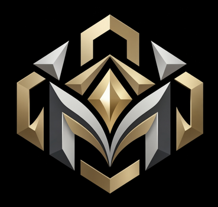
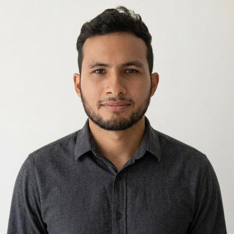

Bienestar emocional
Comprender las emociones, gestionarlas, fortalecer la autoestima, reconocer patrones de pensamiento y conducta para afrontar las dificultades de la vida cotidiana.
En Metanoia encontrarás un espacio de acompañamiento psicológico para comprender tus emociones, reconocer patrones de pensamiento, conducta, y trabajar en los cambios que necesitas para avanzar. Un proceso basado en la escucha, la comprensión y el trabajo conjunto, con objetivos acordes a tu situación.

Procesos individuales para quienes quieren entender lo que viven y trabajar en cambios concretos. Cada proceso se ajusta a las necesidades de la persona.
Comprender las emociones, gestionarlas, fortalecer la autoestima, reconocer patrones de pensamiento y conducta para afrontar las dificultades de la vida cotidiana.
Mejorar la comunicación, establecer límites saludables, comprender patrones de relación con otras personas y con la familia.
Identificar comportamientos que dificultan tus objetivos, fortalecer hábitos, organizarte mejor y desarrollar estrategias de cambio conductual.
Reconocer tus fortalezas, clarificar objetivos, afrontar etapas de cambio y construir un proyecto de vida coherente con tus valores.
Si tu situación requiere atención especializada, te oriento hacia el profesional indicado.
Acompañar no es solo escuchar ni decirte qué hacer. Es un proceso con dirección, construido contigo.
Conocer tu situación, tus dificultades y el motivo de consulta.
Explorar pensamientos, emociones, comportamientos y circunstancias relevantes.
Establecer contigo qué aspectos se trabajarán y qué cambios son pertinentes.
Usar estrategias psicológicas apropiadas y revisar el proceso periódicamente.
El ritmo y los alcances cambian en cada persona.
Mi experiencia incluye el trabajo psicológico en contextos deportivos, formativos, sobre todo con niños y jóvenes. Estos servicios se ofrecen según mis competencias profesionales como psicólogo.
Acompañamiento en habilidades psicológicas, conducta, motivación y adaptación a las exigencias deportivas.
Apoyo en aspectos psicológicos, conductuales de los procesos formativos, la comunicación y el acompañamiento de los deportistas.
Orientación psicoeducativa, acompañamiento del desarrollo infantil, juvenil, y apoyo a los procesos formativos.

Alberto Mario Marsiglia Lara
Psicólogo
Soy psicólogo, he desarrollado experiencia profesional en contextos deportivos, formativos, acompañando procesos de desarrollo conductual, psicológico con niños y jóvenes. Mi experiencia incluye el trabajo con deportistas, entrenadores, familias, así como la observación, el seguimiento de variables psicológicas relacionadas con el desarrollo personal y deportivo.
Metanoia es una palabra de origen griego que significa un cambio profundo de mentalidad. Es la idea que guía este espacio: comprender cómo piensas y vives para poder cambiar con intención.
Se basa en mi formación y mis competencias profesionales como psicólogo. Está abierto a cualquier persona, comparta o no mis creencias.
Mi fe cristiana es parte de mi identidad personal. No sustituye la atención psicológica ni se espera que la compartas para recibirla.
La reflexión bíblica y de fe que comparta sobre crecimiento personal se identificará como tal, aparte del acompañamiento psicológico.
Escríbeme, te cuento cómo trabajo, qué incluye el acompañamiento y cómo podemos empezar.
Puedes empezar con una consulta inicial gratuita. Es informativa: resuelvo tus dudas, te explico el proceso y vemos si se ajusta a lo que buscas. No es una sesión de atención terapéutica.
Solicitar información